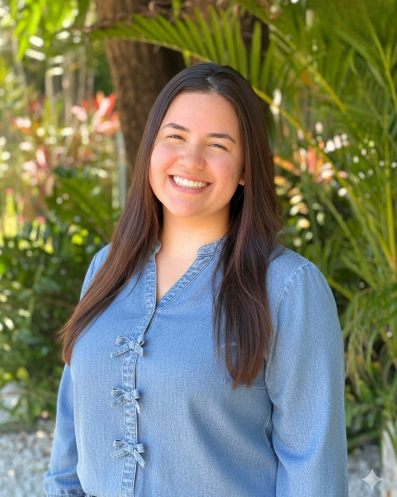

Isadora Paula - WDD 130

Hello! My name is Isadora Paula and I am from Caucaia, Brazil. I like to spent time with my family and friends. I like to sing and watch series. For me the thing that really matter is the little and simple things. Times move so fast, we just have to focus in things that really matters. I hope to be frontend web developer working for a company in United States. Eu gostaria muito de aprender e aprender cada vez mais, desenvolvendo todos os dons e talentos que recebi. Sei que nada é impossível. Tenho sonhos e espero que esses sonhos não sejam sonhos para sempre e que se tornem realidade. Amo tecnologia e o curso tem me ajudado a abrir minha visão para o mundo da tecnologia. #Somente para encaixar a foto com o texto preciso escrever mais. Hello! My name is Isadora Paula and I am from Caucaia, Brazil. I like to spent time with my family and friends. I like to sing and watch series. For me the thing that really matter is the little and simple things. Times move so fast, we just have to focus in things that really matters. I hope to be frontend web developer working for a company in United States. Eu gostaria muito de aprender e aprender cada vez mais, desenvolvendo todos os dons e talentos que recebi. Sei que nada é impossível. Tenho sonhos e espero que esses sonhos não sejam sonhos para sempre e que se tornem realidade. Amo tecnologia e o curso tem me ajudado a abrir minha visão para o mundo da tecnologia.